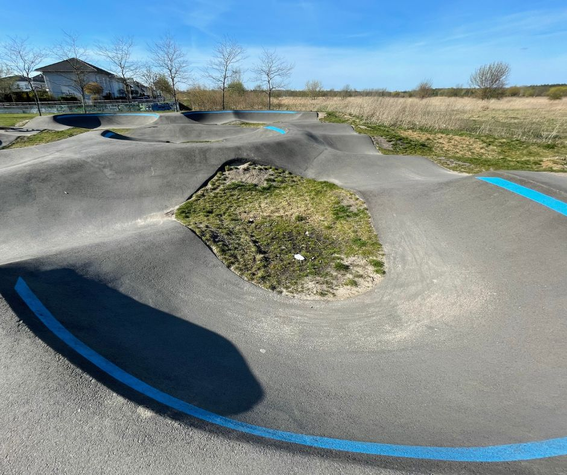
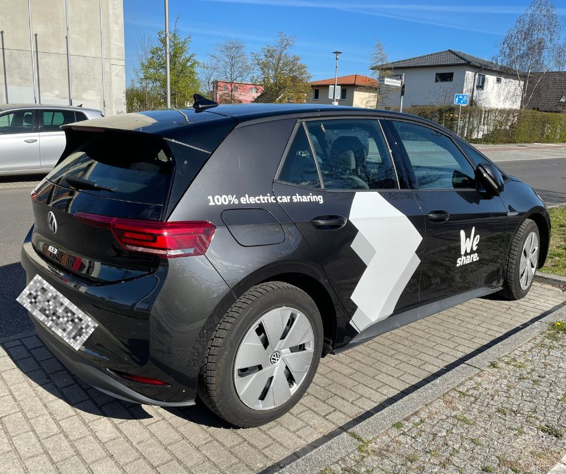

Pumptrack Berlin Spandau Gatow Kladow Germany

The Spandau Gatow (Kladow) pump track is located in Berlin, Germany. As it’s not as centrally located as other skate parks in Berlin, it tends to be less crowded. As the track is less steep compared to the one at Mellowpark Berlin, it’s well-suited for beginners. Nestled within a residential area and surrounded by nature, the track offers a peaceful setting. However, the absence of toilets and nearby cafés or restaurants poses a minor drawback. There are an Aldi and Edeka close by where snacks can be purchased, but be aware that they’re closed on Sundays in Germany. While it’s possible to reach the pump track using public transportation, it can be quite time-consuming. Thus, it’s recommended to drive if possible.
The images in this blog post are from April 2022 and June/August 2023.
📠Location
🗺️ Pumptrack Berlin Spandau, Gatow Johann-Landefeldt-Straße, 14089 Berlin, Germany
Suburb: Spandau
🔗 Google Maps: Pumptrack Spandau Gatow Kladow
🚌 Public transport: Bus stop Kurpromenade - this bus close to Aldi and Edeka
🌠Social Media
- 🥠YouTube Shorts: Video of me riding the Pumptrack
- 🥠YouTube Shorts: Video Follow Cam - me riding the Pumptrack
- 🕸️ Pumptrack Map Spandau Gatow
💪 Pumptrack Overview
The images below display the pump track from various angles.
For the pump track, it’s best to use large, soft wheels given that the surface is similar to a road rather than a smooth skate park. The Carver CX is the truck I enjoy most on pump tracks; they are relatively stable and handle turns well. Grasp trucks would lean even more but so far I didnt’ need that on a pump track.
The following pictures are screenshots from my YouTube Shorts Video where I ride the pump track.


I was trying out some Paris V3 Longboard trucks on a 15" WB Santa Cruz Skateboards Erick Winkowski Volcano deck, you see that in the images above. The longboard trucks were more stable than the surfskate trucks and were fine for that pump track, but I struggled a lot with this setup at the Mellowpark didn’t allow for as much turning as I required.
In this overview image you can see the whole shape of the pump track while it was still in construction in 2020. The image is (c) by Marten Herbst.
Please be cautious upon arrival in the area. This is NOT the pump track, and it features larger edges where one could easily fall when using a surfskate.
🌲 Area & Necessities
The pump track is nestled within a playground in a residential area. Unfortunately, there are no cafés or restaurants nearby. Thus, if you need to use the restroom, your only option is the bushes 🌳. As much as I love this verdant space and the beginner-friendly pump track, I equally dislike the lack of nearby infrastructure. The kids who come with their scooters can easily head home when they need the restroom, but I can’t do that. If you arrive by car there is a gas station further away and you should make use of that.
There’s an Edeka and an Aldi nearby for snacks, but unfortunately, neither of these has a toilet ⌠🚽.
On the map you see a lake and there is a public toilet mentioned but I wouldn’t count on that, especially during colder seasons. The lake should be nice, some surfskate friends went paddeling there after they were shredding the pump track.
🚗 How to get there
My advice is to arrive by car. You’ll find plenty of parking spaces on the road. When I visited for the first time in April 2022, I rented a car from a car-sharing provider, and it was my first time driving an electric car. f you prefer not to drive, you can conveniently take an Uber from central Berlin, though it can be expensive. However, securing an Uber for the return trip can be quite challenging, as the wait times can be long and drivers could cancel at the last minute.

If you have some patience (as the bus operates every 20 minutes), you can also take the bus. Line 135 stops at Kurpromenade. There’s another bus stop that’s slightly closer, but I didn’t take that bus as it’s operated by a different line.

📖 Additional notes
This pump track was the first one I ever tried with a surfskate and I was immediately hooked. It may look slow on video, but I always experience an adrenaline rush when taking sharp turns. It was also my first so-called #skateventure, a mini road trip where I rented a car to go surfskating. I fell quite a few times on the pump track since I was still somewhat wobbly on my surfskate. I always pad up when not skating on flat and this was a very wise decision when trying out a pump track.

I experimented a lot with harder/softer bushings, longboard trucks, shorter and longer wheelbases (different decks) and so on. That’s why you see a variety of different setups in this blog post 😅. Pump tracks can be exhausting, so it’s important to take it easy. When I first visited, I suffered from muscle soreness (around the knee area) for months (not an exaggeration), leading me to seek physiotherapy, consult a personal trainer, and slow down my skating progress. What a letdown! This is an extreme example from my side, and the pandemic had turned me into quite a couch potato, so it wasn’t entirely unexpected.